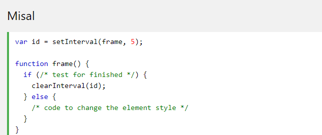

HTML DOM ile JavaScript bir HTML belgesinin tüm öğelerine erişebilir ve bunları değiştirebilir.
Bir web sayfası yüklendiğinde, tarayıcı sayfanın bir Belge Nesne Modeli oluşturur.
Nesne modeliyle JavaScript, dinamik HTML oluşturmak için gereken tüm gücü alır:
•JavaScript sayfadaki tüm HTML öğelerini değiştirebilir
•JavaScript sayfadaki tüm HTML özelliklerini değiştirebilir
•JavaScript sayfadaki tüm CSS stillerini değiştirebilir
•JavaScript mevcut HTML öğelerini ve özelliklerini kaldırabilir
•JavaScript yeni HTML öğeleri ve özellikleri ekleyebilir
•JavaScript, sayfadaki mevcut tüm HTML etkinliklerine tepki verebilir
•JavaScript sayfada yeni HTML etkinlikleri oluşturabilir
•DOM, bir W3C (World Wide Web Consortium) standardıdır.
•DOM, belgelere erişmek için bir standart tanımlar:
"W3C Belge Nesne Modeli (DOM), programların ve komut dosyalarının bir belgenin içeriğine, yapısına ve stiline dinamik olarak erişmesine ve güncelleştirmesine izin veren bir platform ve dilden bağımsız arabirimdir."
W3C DOM standardı 3 farklı parçaya ayrılmıştır:
•Core DOM - tüm belge türleri için standart model
•XML DOM - XML belgeleri için standart model
•HTML DOM - HTML belgeleri için standart model
HTML DOM, HTML için standart bir nesne modeli ve programlama arabirimidir . Şunu tanımlar:
•Nesne olarak HTML öğeleri/p>
•Özellikler tüm HTML elemanlarının
•Yöntemler tüm HTML öğelerine erişmek için
•Olaylar tüm HTML öğeleri için
Başka bir deyişle: HTML DOM, HTML öğelerini alma , değiştirme , ekleme veya silme standardıdır.
HTML DOM yöntemleri, (HTML Elements'ta) gerçekleştirebileceğiniz eylemlerdir .
HTML DOM özellikleri, ayarlayabileceğiniz veya değiştirebileceğiniz değerlerdir.
HTML DOM'ye JavaScript (ve diğer programlama dilleri) ile erişilebilir.
DOM'de, tüm HTML öğeleri nesne olarak tanımlanır.
Programlama arayüzü, her nesnenin özellikleri ve yöntemleridir.
Bir özellik (bir HTML öğesinin içeriğini değiştirmek gibi) almak veya set ki bir değerdir.
Bir yöntem size (eklenti veya bir HTML elemanı silme gibi) yapabilirsiniz bir eylemdir.
**Aşağıdaki örnek innerHTML öğenin içeriğini ( ) ile şu şekilde değiştirir id="demo" :
örneği inceleUyarı: Kodu incelemek için örneği incele dedikten sonra CTRL+U tuşuna basınız
Yukarıdaki örnekte getElementById, bir yöntem iken innerHTML, bir özelliktir .
Bir HTML öğesine erişmenin en yaygın yolu id , öğenin.
Yukarıdaki örnekte , elemanı bulmak için getElementById kullanılan yöntem id="demo" .
Bir öğenin içeriğini almanın en kolay yolu innerHTML özelliği kullanmaktır.
innerHTML Mülkiyet alma veya HTML öğelerinin içeriği değiştirilmesi için yararlıdır.
Belge nesnesi web sayfanızı temsil eder.
Bir HTML sayfasındaki herhangi bir öğeye erişmek istiyorsanız, her zaman belge nesnesine erişmeye başlarsınız.
Aşağıda, HTML'ye erişmek ve bunları değiştirmek için belge nesnesini nasıl kullanabileceğinize ilişkin bazı örnekler verilmiştir.
İlk HTML DOM Düzey 1 (1998), 11 HTML nesnesi, nesne koleksiyonu ve özelliği tanımladı. Bunlar HTML5'te hala geçerlidir. Daha sonra, HTML DOM Seviye 3'e daha fazla nesne, koleksiyon ve özellik eklendi.
Genellikle JavaScript ile HTML öğelerini değiştirmek istersiniz.
Bunu yapmak için önce elemanları bulmalısınız. Bunu yapmanın birkaç yolu vardır:
•HTML öğelerini kimliğe göre bulma
•Etiket adına göre HTML öğeleri bulma
•Sınıf adına göre HTML öğeleri bulma
•CSS seçicileri ile HTML öğeleri bulma
•HTML nesnesi koleksiyonlarına göre HTML öğelerini bulma
DOM'de bir HTML öğesi bulmanın en kolay yolu, öğe kimliğini kullanmaktır.
Bu örnek şu öğeyi bulur id="intro" :
örneği incele
Uyarı: Kodu incelemek için örneği incele dedikten sonra CTRL+U tuşuna basınız
Öğe bulunursa, yöntem öğeyi nesne olarak döndürür (myElement öğesinde). Öğe bulunamazsa, myElement içerecektir null .
Uyarı: Kodu incelemek için örneği incele dedikten sonra CTRL+U tuşuna basınız
Uyarı: Kodu incelemek için örneği incele dedikten sonra CTRL+U tuşuna basınız
Aynı sınıf adına sahip tüm HTML öğelerini bulmak istiyorsanız, kullanın getElementsByClassName() Bu örnek, ile tüm öğelerin bir listesini döndürür class="intro".
örneği inceleUyarı: Kodu incelemek için örneği incele dedikten sonra CTRL+U tuşuna basınız
!!!!Sınıf adına göre öğe bulma, Internet Explorer 8 ve önceki sürümlerinde çalışmaz.
Belirli bir CSS seçicisiyle eşleşen tüm HTML öğelerini (id, sınıf adları, türleri, öznitelikleri, öznitelik değerleri vb.) Bulmak istiyorsanız, querySelectorAll() yöntemi kullanın .
Uyarı: Kodu incelemek için örneği incele dedikten sonra CTRL+U tuşuna basınız
!!!! querySelectorAll() Yöntem Internet Explorer 8 ve önceki sürümlerinde çalışmaz.
Bu örnek id="frm1" , form koleksiyonunu form koleksiyonunda bulur ve tüm öğe değerlerini görüntüler:
örneği inceleUyarı: Kodu incelemek için örneği incele dedikten sonra CTRL+U tuşuna basınız
HTML DOM, JavaScript'in HTML öğelerinin içeriğini değiştirmesine izin verir.
JavaScript dinamik HTML içeriği oluşturabilir:
Tarih: Pzt Nis 06 2020 00:40:21 GMT + 0300 (GMT + 03: 00)
JavaScript'te, document.write() doğrudan HTML çıktı akışına yazmak için kullanılabilir:
örneği inceleUyarı: Kodu incelemek için örneği incele dedikten sonra CTRL+U tuşuna basınız
!!!!Asla document.write() belge yüklendikten sonra kullanmayın . Belgenin üzerine yazılır.
Bir HTML öğesinin içeriğini değiştirmenin en kolay yolu innerHTML özelliği kullanmaktır .
Bir HTML öğesinin içeriğini değiştirmek için şu sözdizimini kullanın:
document.getElementById(id).innerHTML = new HTML
örneği inceleUyarı: Kodu incelemek için örneği incele dedikten sonra CTRL+U tuşuna basınız
Uyarı: Kodu incelemek için örneği incele dedikten sonra CTRL+U tuşuna basınız
Bir HTML özelliğinin değerini değiştirmek için şu sözdizimini kullanın: document.getElementById(id).attribute = new value
Bu örnek, bir öğenin src özelliğinin değerini değiştirir :
Uyarı: Kodu incelemek için örneği incele dedikten sonra CTRL+U tuşuna basınız
Bir HTML öğesinin stilini değiştirmek için şu sözdizimini kullanın:
document.getElementById(id).style.property = new style
Uyarı: Kodu incelemek için örneği incele dedikten sonra CTRL+U tuşuna basınız
Temel Bir Web Sayfası
Tüm animasyonlar bir kapsayıcı öğeye göre olmalıdır.
Kapsayıcı öğesi style = "position: relative" ile oluşturulmalıdır .
Animasyon öğesi style = "position: absolute" " ile oluşturulmalıdır .
örneği inceleUyarı: Kodu incelemek için örneği incele dedikten sonra CTRL+U tuşuna basınız
JavaScript animasyonları, bir öğenin stilindeki kademeli değişiklikleri programlayarak yapılır. Değişiklikler bir zamanlayıcı tarafından çağrılır. Zamanlayıcı aralığı küçük olduğunda, animasyon sürekli görünür.
Temel kod:
Uyarı: Kodu incelemek için örneği incele dedikten sonra CTRL+U tuşuna basınız
getElementsByTagName() Yöntem, bir döner HTMLCollectionnesne
Bir HTMLCollectionnesne . HTML öğelerinin bir dizi benzeri listesi (toplama) 'dir.
Uyarı: Kodu incelemek için örneği incele dedikten sonra CTRL+U tuşuna basınız
Not: Dizin 0'dan başlar.
lengthÖzelliği, bir eleman sayısını tanımlar HTMLCollection:
örneği inceleUyarı: Kodu incelemek için örneği incele dedikten sonra CTRL+U tuşuna basınız
Uyarı: Kodu incelemek için örneği incele dedikten sonra CTRL+U tuşuna basınız
1.Tüm öğelerin bir koleksiyonunu oluşturun
2.Koleksiyonun uzunluğunu görüntüleme
Bu lengthözellik, bir koleksiyondaki öğeler arasında döngü yapmak istediğinizde yararlıdır:
örneği inceleUyarı: Kodu incelemek için örneği incele dedikten sonra CTRL+U tuşuna basınız
HTMLCollection bir dizi DEĞİLDİR!
Bir HTMLCollection bir dizi gibi görünebilir, ancak değildir.
Listede dolaşabilir ve bir sayıya sahip öğelere başvurabilirsiniz (tıpkı bir dizi gibi).
Ancak HTMLCollection öğesinde valueOf (), pop (), push () veya join () gibi dizi yöntemlerini kullanamazsınız.
Bir NodeListnesnenin bir belgeden ekstre düğümlerin bir listesi (toplama) 'dir.
Bir NodeListnesne neredeyse bir HTMLCollectionnesne ile aynıdır.
Bazı (eski) tarayıcılar gibi yöntemler için HTMLCollection yerine bir NodeList nesnesi döndürür getElementsByClassName().
Tüm tarayıcılar özellik için bir NodeList nesnesi döndürür childNodes.
Çoğu tarayıcı yöntem için bir NodeList nesnesi döndürür querySelectorAll().
Uyarı: Kodu incelemek için örneği incele dedikten sonra CTRL+U tuşuna basınız
Bir HTMLCollection(önceki bölüm) HTML öğelerinin topluluğudur.
A NodeList, belge düğümlerinin bir koleksiyonudur.
Bir NodeList ve bir HTML koleksiyonu aynı şeydir.
Hem HTMLCollection nesnesi hem de NodeList nesnesi, nesnelerin dizi benzeri bir listesidir (koleksiyon).
Her ikisinin de listedeki (koleksiyon) öğe sayısını tanımlayan bir length özelliği vardır.
Her ikisi de bir dizi gibi her öğeye erişmek için bir dizin (0, 1, 2, 3, 4, ...) sağlar.
HTMLColeksiyon öğelerine adlarına, kimliklerine veya dizin numaralarına erişilebilir.
NodeList öğelerine yalnızca dizin numaralarıyla erişilebilir.
Yalnızca NodeList nesnesi öznitelik düğümleri ve metin düğümleri içerebilir.